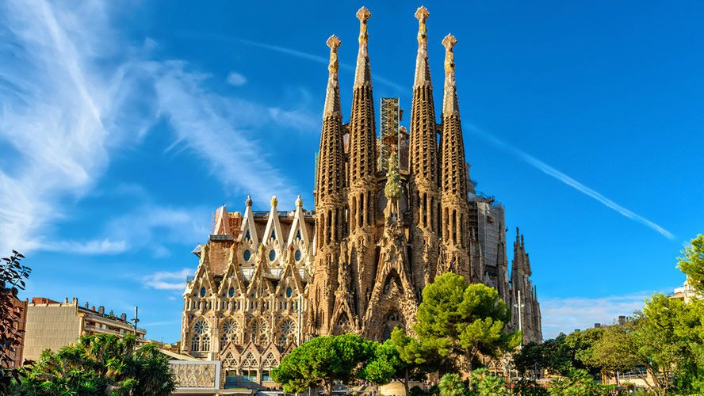
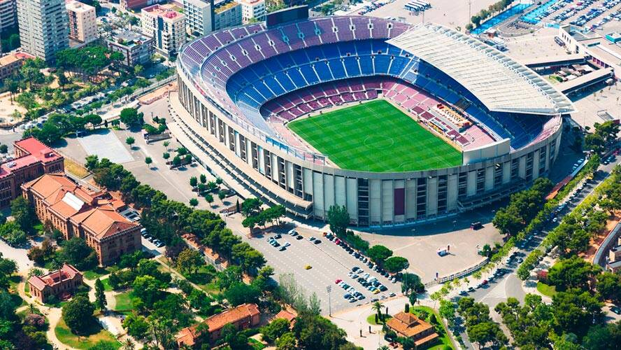
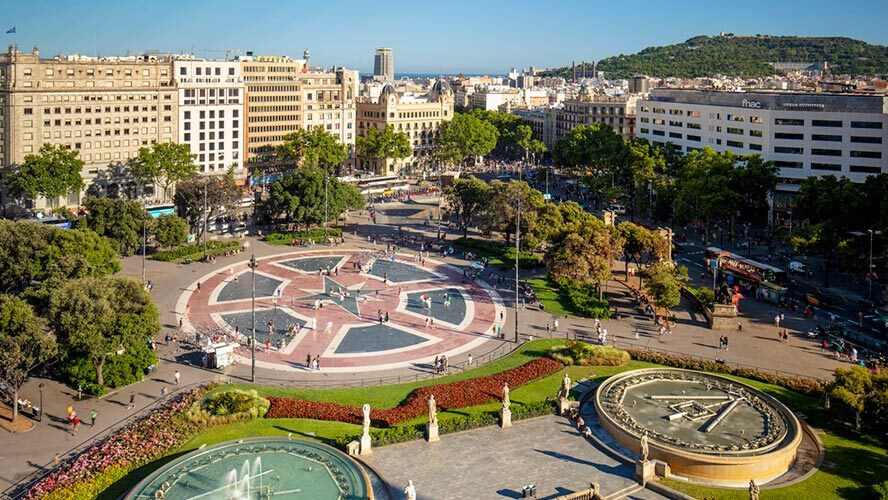

Basílica de la Sagrada Familia
La Sagrada Familia es, posiblemente, el monumento más conocido y visitado de Barcelona. Es todo un emblema. El arquitecto Antoni Gaudí dedicó 40 años de su vida a su construcción y por ello descansa allí, bajo una de sus naves. Su particular e impresionante arquitectura no deja indiferente a nadie. Una joya y un emblema de la Barcelona modernista que no puedes perderte en Barcelona.
Camp Nou
Si te gustan los deportes, especialmente el fútbol, no puedes perderte el estadio de uno de los equipos más reconocidos del mundo. El Camp Nou es el santuario de todos los azulgranas, pero también un estadio impresionante y majestuoso con capacidad para 48.000 personas que bien merece una visita.
Plaza de Catalunya
Es uno de los puntos neurálgicos de la ciudad, un lugar de encuentro que separa la parte antigua de la ciudad de la denominada Ensanche. La plaza de Catalunya fue construida en 1889 después de la Exposición Universal que se celebró en Barcelona el año anterior. Está rodeada de importantes edificios y de dos grandes fuentes.
